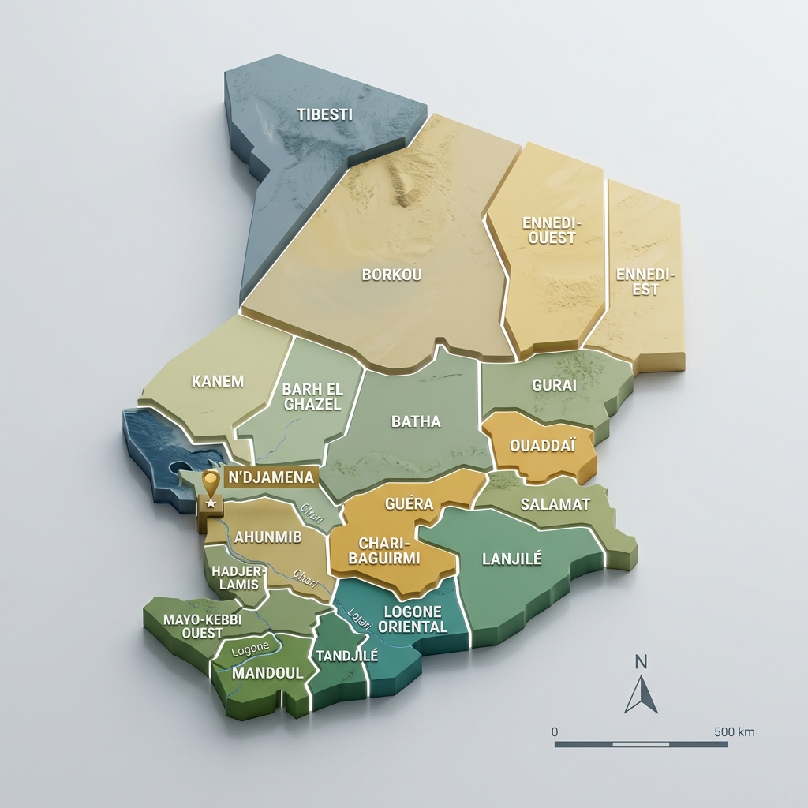
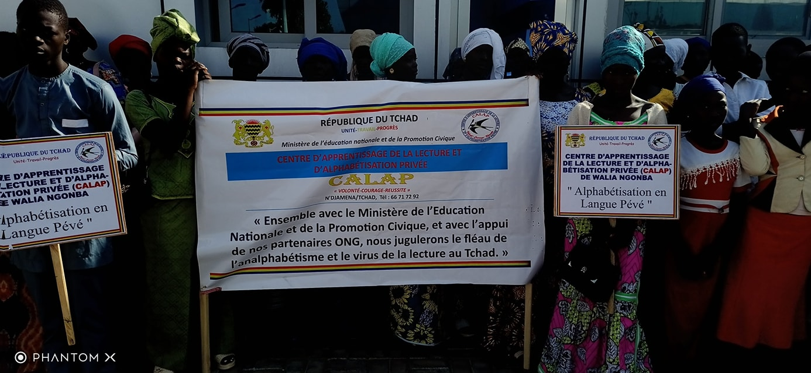
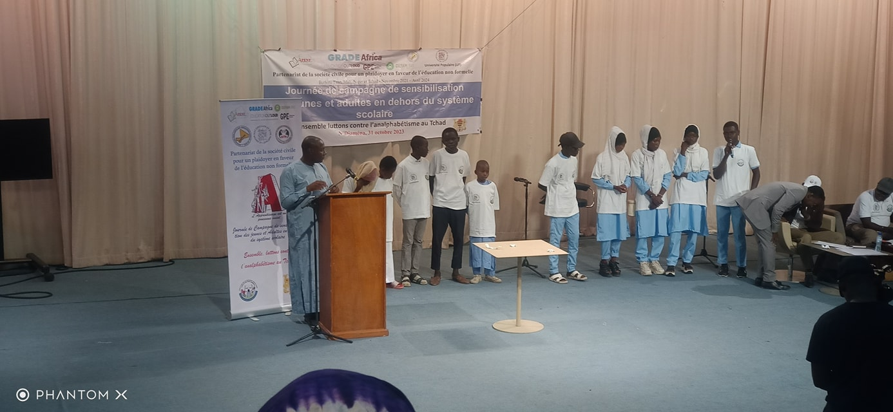
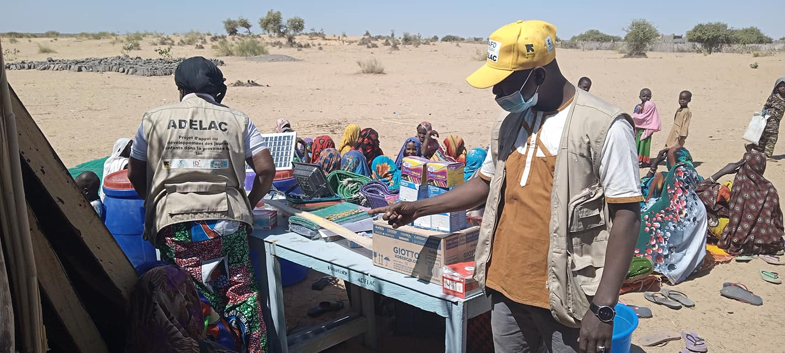
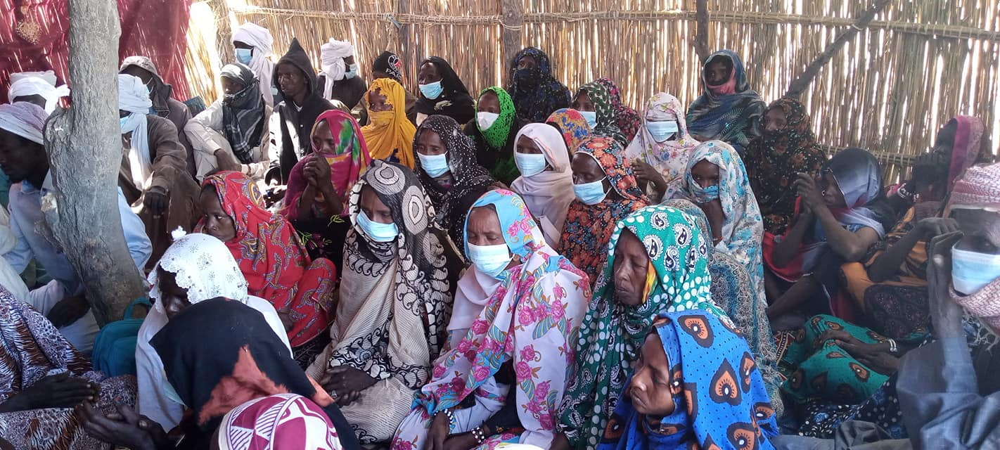
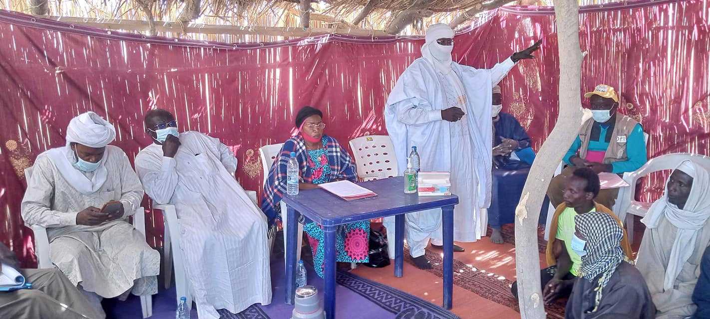
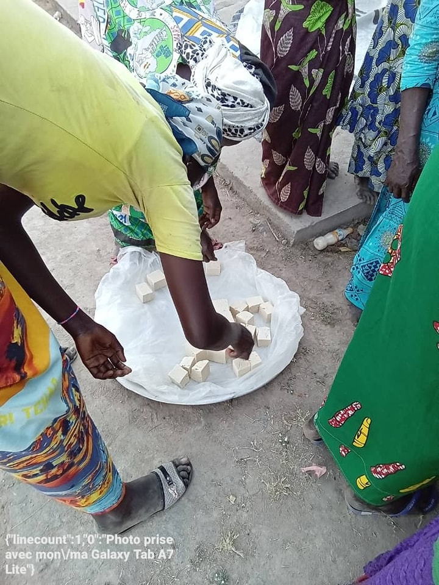
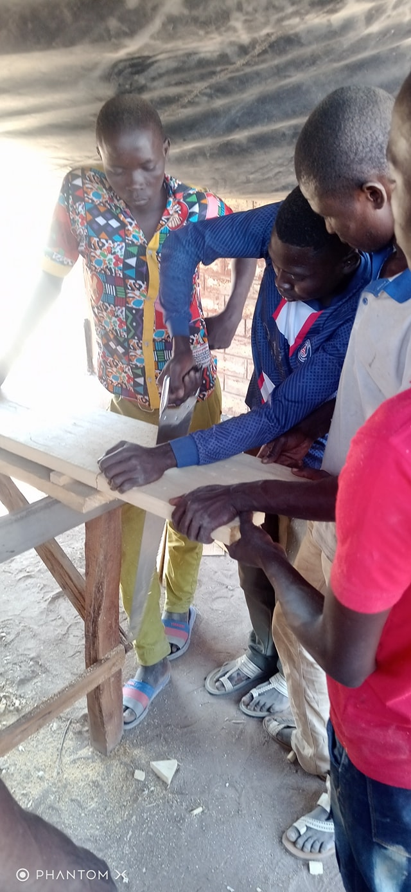
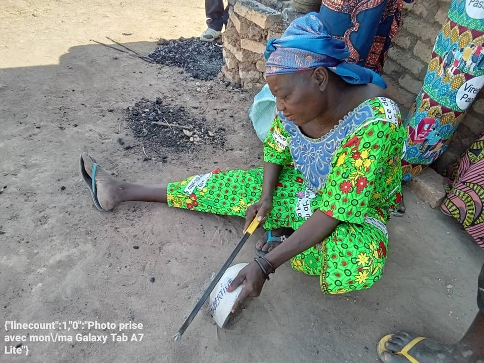
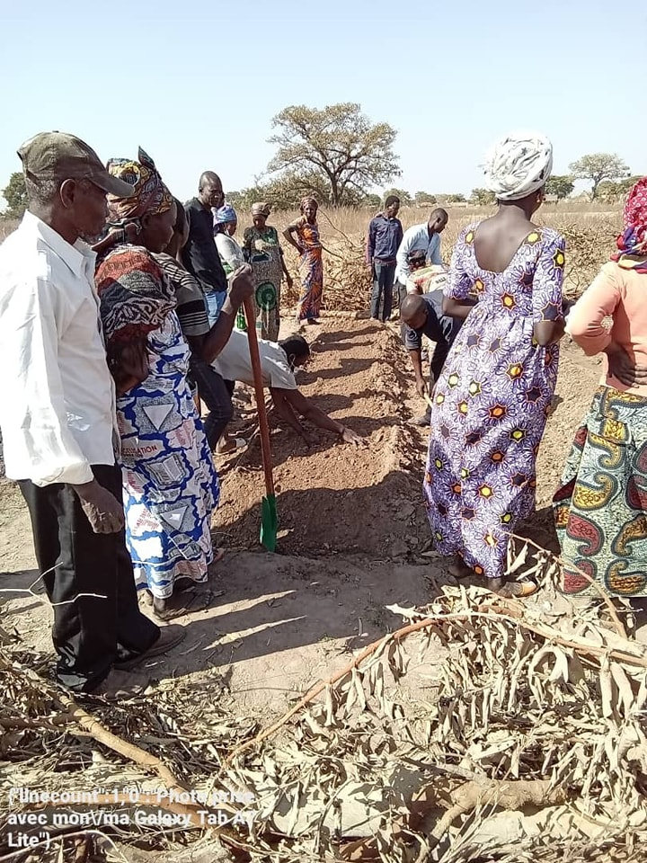

Nos Actions
Découvrez nos interventions sur le terrain

Campagne de sensibilisation à l'alphabétisation
Le PADIESE a participé aux côtés de la coalition COSENF/T à une séance de sensibilisation des jeunes et adultes hors du système éducatif, dans la salle multimédia de l'ONAMA.
Au programme : sketchs mettant en exergue les bienfaits de l'éducation et de l'alphabétisation, et jeux concours. Cette journée a été organisée en collaboration avec l'Université Populaire (UP), le réseau des journalistes tchadiens pour la nutrition et le Ministère de l'Éducation Nationale et de la promotion civique.
Centres participants (N'Djamena) : CEBNF de Ndjari, Association AlNadjah, Centre d'alphabétisation de Walia Goumna, Centre des femmes d'Amtoukoui.



Ouverture de 7 centres d'alphabétisation
Le village de Taou Kriou (Canton Ngarangou, Département de Mamdi au Lac Tchad) a abrité la cérémonie d'ouverture de 7 centres d'alphabétisation dans le cadre du Projet ADELAC.
Présence officielle : La cérémonie a été présidée par la représentante du Délégué de l'Éducation Nationale de la province du Lac, accompagnée de l'IDEN de Mamdi, du SAENF et du SSAENF. Étaient également présents sa majesté le chef de canton de Ngarangou, le chef de village de Taou Kriou, ainsi que les représentants des ONG membres du consortium.
Quatre interventions ont marqué cette journée : le mot du chef de village, celui du chef de Base Padiese Bol, l'intervention du Chef de canton, et le discours d'ouverture de la représentante de la DPEN du Lac.



.jpg)
Formations aux métiers à Danamadji
Pour contribuer à l'atteinte de l'objectif 4 des ODD, l'antenne PADIESE du Moyen Chari a lancé une série de formations professionnelles pour les apprenants des Centres d'alphabétisation et des CEBNF.
Métiers enseignés : Maraîchage, Apiculture, Fonderie, Élevage de petits ruminants, Maintenance d'engins à deux roues, Menuiserie bois, et Transformation de produits locaux.
Impact : 400 adultes et 149 jeunes formés grâce aux financements de la DDC et de l'AFD. L'Espace d'Éducation et Formation Professionnelle (EEFP) de Danamadji dispose désormais d'un plateau technique complet pour la Grande Sido.



